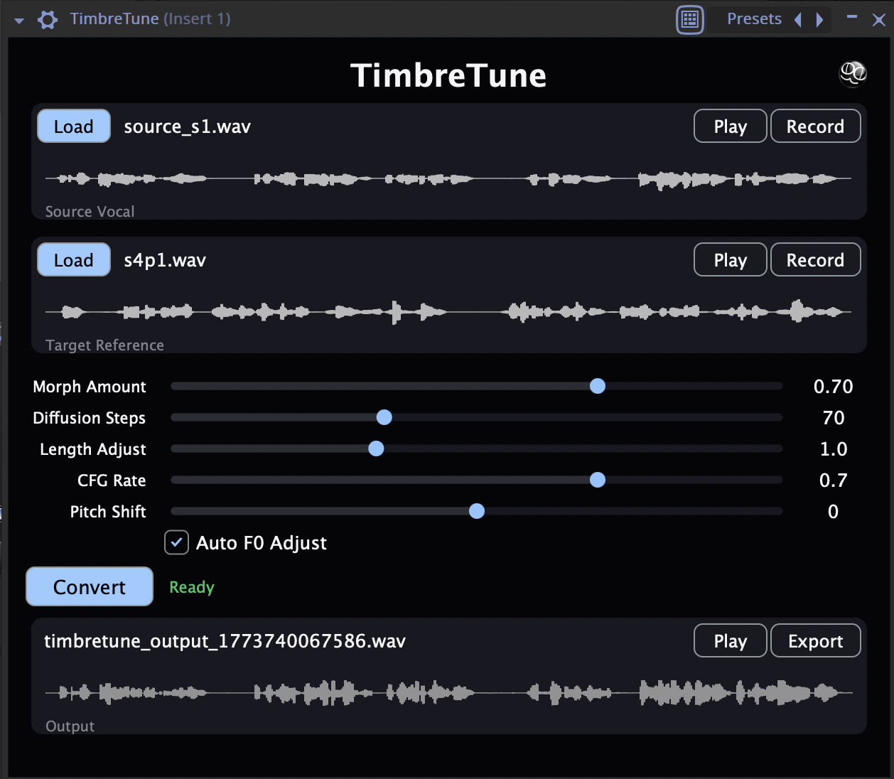
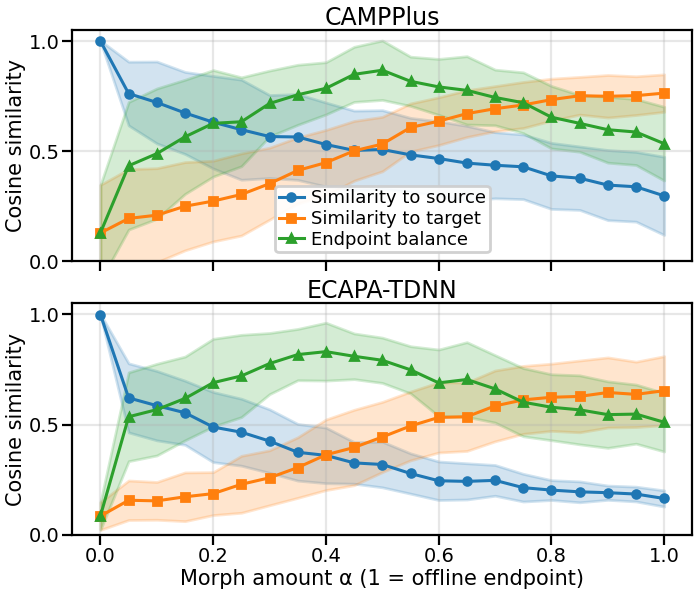

Vocal timbre morphing
A VST3 / AU plug-in for blending a vocal performance toward a reference voice.
Source
Reference
Morph amount
0 is a reconstructed source; 1 is the converted endpoint. Use the Source player to compare with the original recording.
Audio details
These TimbreTune samples use an offline rendering workflow: source and converted-performance log-mel spectrograms are aligned, interpolated, and resynthesized with BigVGAN. The plug-in and paper evaluation use SLERP conditioning instead.
The conversion guide uses a 0.95 morph, 100 diffusion steps, CFG 0.5, and Auto F0 off. Playback is mono 44.1 kHz, 24-bit WAV, with level matching and at least 1.5 dB of true-peak headroom.
Method and plug-in
A creative vocal effect for exploring intermediate timbres while retaining the source performance. Built on pretrained Seed-VC, without retraining or fine-tuning.
Encode the performance
Whisper extracts source content, F0 supplies pitch conditioning, and CAMPPlus encodes the source and reference speaker identities.
Blend two conditioning signals
The morph amount α interpolates speaker embeddings with SLERP and scales the reference log-mel prompt.
eα = SLERP(es, er; α)Pα = αPrSynthesize and audition
A diffusion transformer generates a mel-spectrogram; BigVGAN turns it into 44.1 kHz audio. A local Flask server connects the inference model to the VST3 / AU plug-in.
At α = 0, synthesis is bypassed. The interactive control ends at 0.95; α = 1 is an offline evaluation endpoint. Equal slider increments need not produce equal perceptual changes.
{kind=link}

Plug-in controls
- Morph Amount
- Changes speaker embedding and reference prompt conditioning together.
- Pitch Shift / Auto F0
- Adjust vocal register and automatic pitch alignment.
- Length Adjust
- Controls output duration.
- Diffusion Steps
- Trades rendering time against synthesis quality.
- CFG Rate
- Sets classifier-free guidance strength.
Project credits
Ben Cole designed and developed TimbreTune at Northwestern University.
Annie Chu served as project mentor and contributed edits to the paper.
TimbreTune began as a class project by Ben Cole, Benjamin Auby, and Alan Wang for CS 352: Machine Perception in Music, taught by Bryan Pardo. Ben continued developing and evaluating the tool independently beyond the course.
Results from the paper
Preliminary characterization of five source–reference pairs. These are the figures and values reported in the current draft.
- 5
- source–reference pairs
- 21
- settings per pair · α = 0–1, step 0.05
- 2
- speaker encoders · internal and external
Sources span 7.2–44.0 seconds; references span 6.1–14.6 seconds. The study measures speaker-embedding cosine similarity to both inputs and an intermediateness proxy. SLERP is compared with waveform mixing, LERP, cosine, and sigmoid interpolation at α = 0.5.
{kind=link}

How identity changes
Both encoders show source similarity decreasing and target similarity increasing as α rises. Intermediate settings balance the two, but the crossover depends on the encoder.
At α = 0.5, SLERP has the highest mean intermediateness among the compared methods in this small study: 0.867 with CAMPPlus and 0.792 with ECAPA-TDNN.
These scores describe embedding similarity. They do not establish equal perceived blending, audio quality, or a general advantage across voices.
Interpolation comparison
Mean scores reproduced from the paper. Source control (α = 0) and full conversion (α = 1) are endpoint baselines; the other rows use α = 0.5.
CAMPPlus
Internal speaker encoder| Method (α) | Source sim. ↑ | Target sim. ↑ | Intermed. ↑ |
|---|---|---|---|
| Source Control (0.0) | 0.999 | 0.128 | 0.129 |
| Simple Mixing (0.5) | 0.863 | 0.326 | 0.464 |
| LERP (0.5) | 0.473 | 0.506 | 0.862 |
| Cosine (0.5) | 0.480 | 0.524 | 0.854 |
| Sigmoid (0.5) | 0.475 | 0.509 | 0.853 |
| TimbreTune SLERP (0.5) | 0.507 | 0.532 | 0.867 |
| Full Conversion (1.0) | 0.297 | 0.763 | 0.534 |
ECAPA-TDNN
External speaker encoder| Method (α) | Source sim. ↑ | Target sim. ↑ | Intermed. ↑ |
|---|---|---|---|
| Source Control (0.0) | 0.999 | 0.085 | 0.086 |
| Simple Mixing (0.5) | 0.784 | 0.256 | 0.448 |
| LERP (0.5) | 0.286 | 0.427 | 0.776 |
| Cosine (0.5) | 0.295 | 0.440 | 0.771 |
| Sigmoid (0.5) | 0.295 | 0.440 | 0.779 |
| TimbreTune SLERP (0.5) | 0.319 | 0.444 | 0.792 |
| Full Conversion (1.0) | 0.165 | 0.654 | 0.511 |
Download table CSV · Figure and data provenance
What the scores measure
Source and target similarity are cosine similarities between each output’s speaker embedding and the input recordings. CAMPPlus is used inside Seed-VC; ECAPA-TDNN provides an external view.
The reported intermediateness proxy is 1 − |source similarity − target similarity|, calculated per output and then averaged. Higher values mean more balanced similarity to the two inputs, even when both similarities are low.
Listening observations and limitations
Informal listening suggested timbral blends that retained source timing, pitch contour, and phrasing. The perceived midpoint was not consistently α = 0.5, and some outputs had “crunchy” distortion. These observations are exploratory, without a controlled listening study.
The paper proposes more conservative guidance and step settings, better export headroom, and smoother chunk overlaps as possible improvements. The cause of the remaining artifacts is not established.
The listening samples use the offline rendering workflow described in Audio details. The results here evaluate the plug-in’s SLERP method.
Responsible use
TimbreTune is designed for creative timbre blending. Use self-recorded or explicitly consented reference audio. The 0.95 morph limit discourages full conversion but does not prevent a recognizable reference voice or eliminate misuse.
Rendering time
Measured on an Apple M1 Pro with 16 GB memory using PyTorch MPS. Times run from submitting a request to downloading the finished WAV.
Compare diffusion step counts
100 diffusion steps · mean of 3 requests per duration · separate follow-up
The original benchmark covers 1–50 steps. Results at 60–120 steps come from a separate test with 5-second and 10-second inputs. Both use CFG 0.7 and Auto F0 on. The listening samples use additional offline processing that is not included in this plug-in benchmark. These tests measure time, not audio quality.
Measurements and test setup
Three repetitions per tested configuration, in randomized order after warm-up. An 8-second reference, morph amount 0.5, length factor 1, and no pitch shift. The two benchmark sessions were measured separately.
| Source |
|---|
Download summary CSV · All 132 observations · Full methodology